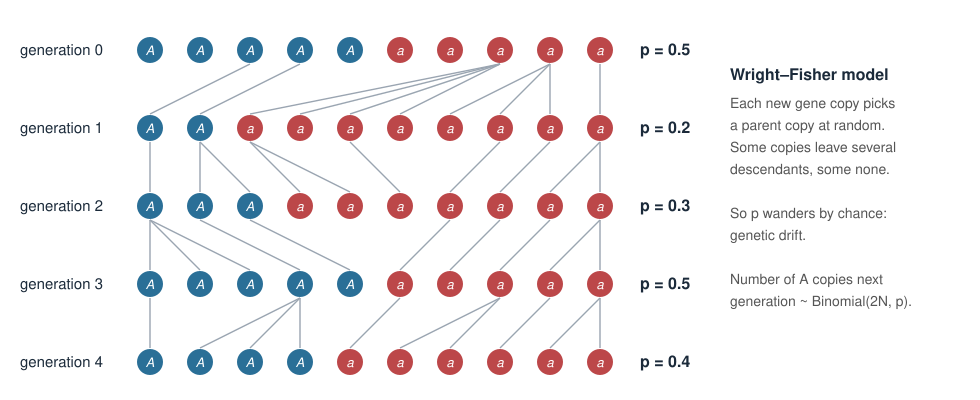
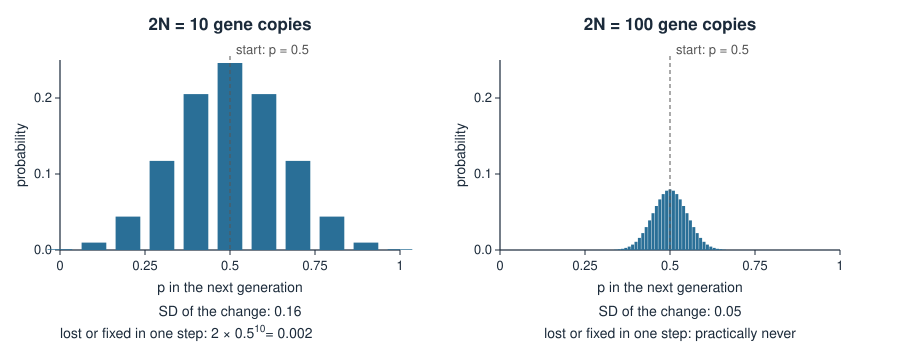
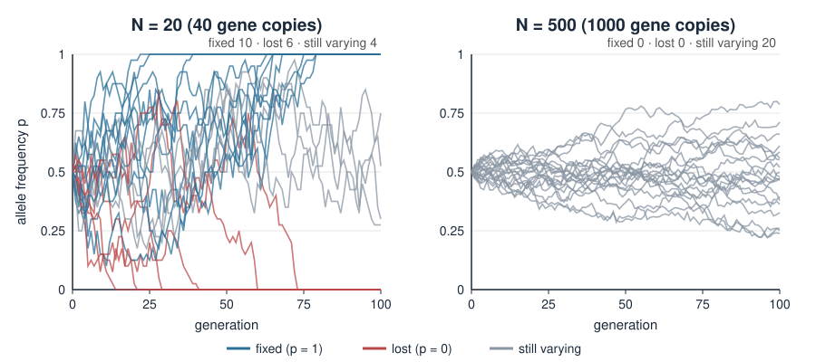
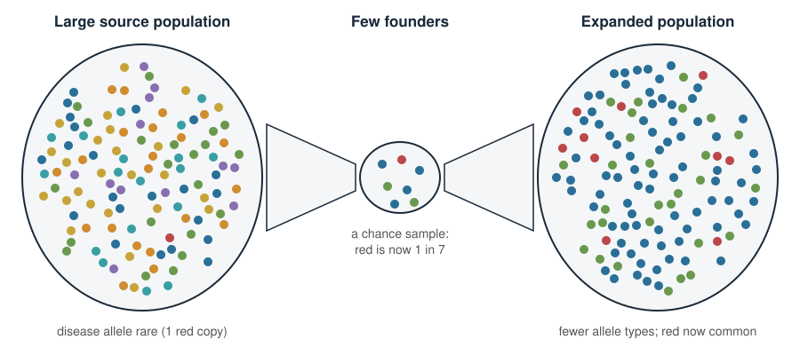
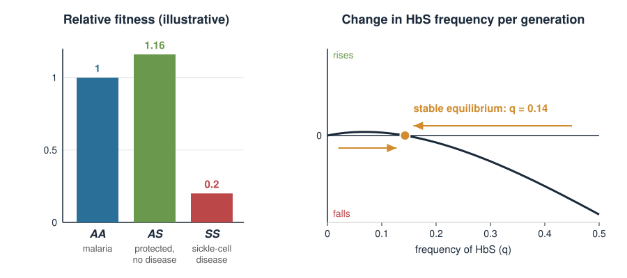

Hardy–Weinberg keeps the allele frequency p constant. Real allele frequencies change. This lecture is about the four forces that change them:
Genetic drift: chance, strongest in small populations. The Wright–Fisher model in numbers; fixation and loss; effective population size; founder effects and the Finnish disease heritage.
Selection: genotypes differ in fitness. The selection recursion, worked one generation at a time; dominance and the speed of selection.
Mutation and mutation–selection balance: why harmful alleles never disappear, and where the formulas come from.
Migration: gene flow makes populations alike.
Heterozygote advantage: sickle-cell haemoglobin and malaria, with the equilibrium worked out by hand.
This is syllabus outcome 2: how allele frequencies in populations vary with different factors. Book: Hartwell, the population genetics chapter.
Four forces change allele frequencies
Force
What it does to p
Direction
Strongest when
Drift
random change from generation to generation
none (random)
population is small
Selection
genotypes leave different numbers of offspring
towards the fitter allele, or to a balance
fitness differences are large
Mutation
turns one allele into another
towards new alleles
over very long times (rates ~10⁻⁸ per base)
Migration
brings alleles from other populations
towards the source population’s p
many migrants, very different p
Drift and mutation create and remove variation; selection adapts; migration makes populations similar. Real populations feel all four at once.
Genetic drift: the Wright–Fisher model

A population of N diploid individuals has 2N gene copies. Each copy in the next generation is a random draw from the copies of this generation.
So the number of A copies next generation is Binomial(2N, p): the same rbinom you used for sibships.
p goes up or down by chance: genetic drift. The expected change is zero, but the variance per generation is p(1 − p)/(2N).
Drift in numbers: one generation

2N = 10: SD of the change = √(0.5 × 0.5/10) = 0.16. A is lost at once if all 10 draws are a: 0.5¹⁰ ≈ 0.001 (and fixed with the same probability).
2N = 100: SD = √(0.5 × 0.5/100) = 0.05. The new p almost always lies between 0.4 and 0.6.
A rarer allele is lost more easily: with p = 0.3 and 2N = 10, P(lost in one generation) = 0.7¹⁰ = 0.028.
What drift does

Each population wanders until the allele is fixed (p = 1) or lost (p = 0). Then drift stops: there is no variation left.
The probability that a neutral allele is eventually fixed equals its starting frequency, p₀. A new mutation (p₀ = 1/2N) is almost always lost.
HeterozygosityH = 2pq falls by a factor (1 − 1/2N) per generation on average. Different populations diverge.
Drift over many generations: worked numbers
Fixation. A neutral allele at frequency p₀ is eventually fixed with probability p₀.
Why: drift has no direction, so the averagep over many populations stays p₀. At the end every population sits at 0 or 1, so the fraction at 1 must be p₀.
A new mutation in N = 100 people: p₀ = 1/200, so it is lost with probability 0.995.
Half of the variation is gone after about 2N ln 2 = 200 × 0.69 ≈ 139 generations: drift works on a time scale proportional to N.
Effective population size
Drift depends on the effective population size Nₑ: the size of an ideal Wright–Fisher population that drifts as fast as the real one. Usually Nₑ is much smaller than the census size.
Unequal sex ratio: N_e = \dfrac{4 N_m N_f}{N_m + N_f}. A herd with 10 breeding males and 90 females: Nₑ = 4 × 10 × 90 / 100 = 36, not 100.
Fluctuating size: Nₑ is close to the harmonic mean over generations, so a single small generation dominates. Sizes 1000, 10, 1000: Nₑ = 3/(1/1000 + 1/10 + 1/1000) ≈ 29.
Variance in family size (some parents have many children, most have few) also lowers Nₑ.
Long-term Nₑ of humans is estimated at roughly 10 000, although billions are alive today: past bottlenecks still shape our genomes.
Founder effects and bottlenecks

A new population founded by few people carries only a chance sample of the source’s alleles. A rare allele that happens to be among the founders can become common; many others are lost.
A bottleneck (a population crash and recovery) has the same effect.
Recessive diseases due to that allele are then much more common than elsewhere, and are usually due to one shared (“founder”) mutation.
The Finnish disease heritage
Finland’s population grew from a small number of settlers, with further bottlenecks as internal regions were settled. Result:
A few dozen rare recessive diseases are much more common in Finland than elsewhere: the Finnish disease heritage (reviewed by Norio, Hum Genet 2003). Most patients are homozygous for one founder mutation.
Example: Salla disease (free sialic acid storage, SLC17A5, 6q13, autosomal recessive). Founder allele R39C (rs80338794): allele frequency about 0.0046 in Finns in gnomAD v4 exomes, 20 times that in other Europeans (0.00023).
Conversely, some diseases common elsewhere in Europe are rare in Finland: CFTR F508del is about 10 times rarer in Finns than in other Europeans (previous lecture).
Same forces, opposite outcomes: drift raises some alleles and removes others.
Demo: drift and selection
Selection: fitness and the Δp recursion
Relative fitnessw: the relative number of offspring a genotype leaves. With selection coefficient s and dominance h:
Genotype
AA
Aa
aa
Fitness w
1 + s
1 + hs
1
Frequency before selection
p²
2pq
q²
After selection, the frequency of A among the parents of the next generation is
p' = \frac{p^2 w_{AA} + pq\, w_{Aa}}{\bar w}, \qquad \bar w = p^2 w_{AA} + 2pq\, w_{Aa} + q^2 w_{aa}.
h = 1: A dominant; h = ½: additive; h = 0: A recessive. Apply the recursion generation after generation (a loop) to follow p.
The recursion, one generation by hand
p = 0.1, s = 0.2, h = ½ (additive): fitnesses 1.2, 1.1, 1.
AA
Aa
aa
sum
1. frequency at birth (HWE)
0.01
0.18
0.81
1
2. fitness w
1.2
1.1
1.0
3. frequency × w
0.012
0.198
0.810
w̄ = 1.020
4. A alleles among survivors
0.012
½ × 0.198 = 0.099
0
0.111
Divide by w̄: p′ = 0.111 / 1.020 = 0.1088. So Δp = +0.0088 in one generation.
Next generation: start again at step 1 with p = 0.1088 (→ 0.1183 → 0.1285 …).
How fast does p change? Δp is proportional to pq
The table simplifies to one line:
\Delta p = p' - p = \frac{pq\,\big[\,p\,(w_{AA} - w_{Aa}) + q\,(w_{Aa} - w_{aa})\,\big]}{\bar w}.
Halving q takes 1/q₀ = 100 generations, about 2500 years, even though every affected person is removed. The copies survive in healthy carriers.
Mutation–selection balance
Selection removes harmful alleles; mutation creates new ones. They balance at an equilibrium frequency, with mutation rate μ per generation:
Harmful allele
Equilibrium frequency
Example: μ = 10⁻⁵, s = 1 (lethal)
recessive (seen only in aa)
\hat q \approx \sqrt{\mu / s}
q̂ ≈ 0.003, incidence q̂² ≈ 10⁻⁵
dominant (seen in Aa)
\hat q \approx \mu / s
q̂ ≈ 10⁻⁵
A recessive lethal allele is ~300 times more frequent than a dominant one with the same mutation rate: it hides in carriers.
For a dominant lethal, every case is a new mutation (recall achondroplasia and new mutations in the pedigrees unit).
Where the balance formulas come from
At equilibrium, copies gained by mutation = copies lost by selection, per generation.
recessive harmful allele
dominant harmful allele
gained by mutation (A → a)
≈ μ
≈ μ
who is selected against
aa, frequency q²
Aa, frequency ≈ 2q, half its alleles are a
lost by selection
≈ s q²
≈ s q
balance
μ = s q² → q̂ = √(μ/s)
μ = s q → q̂ = μ/s
Worked example, a recessive allele with s = 0.25 and μ = 10⁻⁶: q̂ = √(10⁻⁶ / 0.25) = √(4 × 10⁻⁶) = 0.002; incidence q̂² = 4 × 10⁻⁶; carriers ≈ 2q̂ = 1 in 250.
Migration (gene flow)
If a fraction m of each generation are migrants from a population with allele frequency pM:
p' = (1-m)\,p + m\,p_M, \qquad \Delta p = m\,(p_M - p).
The difference from the source shrinks by a factor (1 − m) each generation: after t generations, (1 − m)t. Example: m = 0.05, after 20 generations 0.95²⁰ = 0.36 of the original difference is left.
A little migration is enough to stop populations from drifting apart: roughly one migrant per generation keeps them from fixing different alleles.
Migration also introduces new alleles, and mixes populations: admixed populations (such as ACB, ASW and PUR in 1000 Genomes) carry alleles from several continents.
For HbS: ring forms of Plasmodium falciparum inside red blood cells. HbA/HbS carriers are protected against severe malaria.
Heterozygote advantage: sickle cell and malaria

HbA/HbS carriers are protected against severe falciparum malaria; HbS/HbS have sickle-cell disease. Where malaria is common, the heterozygote is fittest.
Then q rises when rare and falls when common, to a stable equilibrium\hat q = \dfrac{w_{AS} - w_{AA}}{2w_{AS} - w_{AA} - w_{SS}}. With the illustrative fitnesses 1, 1.16, 0.2: q̂ = 0.16/1.12 = 0.14.
1000 Genomes Yoruba (Nigeria): q(HbS) = 0.139 (previous lecture). This is balancing selection.
Heterozygote advantage, step by step
1. Rescale so the heterozygote has fitness 1 (divide by 1.16):
AA
AS
SS
fitness
1/1.16 = 0.862
1
0.20/1.16 = 0.172
written as
1 − s₁, s₁ = 0.138
1
1 − s₂, s₂ = 0.828
2. Equilibrium: \hat q = \dfrac{s_1}{s_1 + s_2} = \dfrac{0.138}{0.138 + 0.828} = \mathbf{0.143} (the same as the formula on the previous slide).
3. Check that it is stable, with the table method of the recursion:
q(S) now
0.02
0.05
0.14
0.30
0.50
Δq per generation
+0.0027
+0.0049
+0.0004
−0.037
−0.114
Below q̂ the allele rises, above it falls: a stable equilibrium.
Drift versus selection
Which wins? Compare selection (s) with drift (1/2Nₑ):
If 4Nₑs ≫ 1, selection dominates: the allele follows the deterministic curve. If 4Nₑs ≲ 1, the allele behaves almost as if neutral.
A new favourable mutation is still usually lost: its fixation probability is only about 2shet (Haldane), where shet is the heterozygote’s advantage. With shet = 0.025: 5%, so 95% of such mutations are lost by chance while still rare.
In small populations, mildly harmful alleles can drift to high frequency, and favourable ones are lost.
So most variation in the genome is shaped by drift, and selection acts strongly only where fitness effects are large.
Common mistakes
Mistake
Correct
“Drift pushes rare alleles towards loss”
drift has no direction: the expected change is 0. Rare alleles are lost more often only because they start closer to 0
“The fixation probability of a neutral allele depends on N”
it is p₀. N sets how long it takes, and p₀ = 1/2N for a new mutation
Nₑ as the arithmetic mean of sizes
harmonic mean: one small generation dominates
Forgetting to divide by w̄
frequencies after selection must add up to 1
Counting 2pqA alleles from heterozygotes
each heterozygote carries oneA: the term is pq wAa
“Selection removes a harmful recessive allele quickly”
once rare, it hides in carriers: halving q = 0.01 takes 100 generations even for a lethal
“A beneficial mutation always spreads”
most are lost by drift while rare: P(fix) ≈ 2shet
Summary
Drift: random sampling of 2N gene copies each generation. Alleles are fixed or lost; P(fixation) = p₀; heterozygosity decays by (1 − 1/2N) per generation. Use Nₑ, which is usually much smaller than the census size.
Founder effects and bottlenecks make some rare alleles common (Finnish disease heritage, Salla disease) and others rare (CF in Finland).
Selection: p′ = (p²wAA + pq wAa)/w̄, done as a table generation by generation. Δp ∝ pq: fast at intermediate p, slow near 0 and 1. A recessive lethal falls as qt = q₀/(1 + tq₀).
Migration: Δp = m(pM − p); makes populations similar.
Heterozygote advantage keeps HbS at a stable q̂ = s₁/(s₁ + s₂) where malaria is common.
Where this leads
Next: Complex traits: many loci, each with a small effect, plus environment. GWAS find them, and population structure (Wahlund, drift between populations) is a trap.
Cancer genetics again: a tumour is a population of cells. Drivers are selected, passengers drift along, and resistance to a drug evolves by selection.
In the exercise: drift and selection by hand, the demo, the Finnish disease heritage in MedGen and gnomAD, and a Wright–Fisher simulation in R with a for loop.
.jpg){kind=link}
_parasite_in_blood.jpg){kind=link}